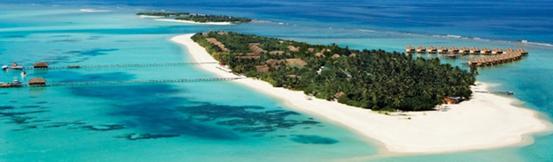

Kanuhura – Maldive 
Kanuhura è un resort 5 stelle lusso, membro The Leading Small Hotels of the World, ospitato su una sottile isola ovale lunga 1 km e larga 200 m,
nella parte nord-orientale dell'atollo di Lhaviyani, a nord di Malè.
Kanuhura è raggiungibile dall'aeroporto internazionale di Malè dopo soli 45 minuti di volo in idrovolante.
All'arrivo gli ospiti vengono accolti dallo staff che li attende sul lungo pontile in legno che arriva fino all'isola e poi si snoda nell'area principale dell'hotel da una parte,
con la piscina, la Spa, i ristoranti, i bar e alcune Beach Villa, e dall'altra, con il centro per gli sport acquatici, un bar, la discoteca e altre Beach e Duplex Villa.
Continua poi oltre la spiaggia e si divide in due schiere di Water Villa & Suite, tutte affacciate sulla laguna, con veranda e accesso diretto al mare.
Le Beach Villa si snodano su entrambi i lati dell'isola e si affacciano sulla sabbia bianca e il mare turchese.
Tutte le ville e suite hanno bagni spaziosi con docce all'aperto e ampie vasche in pietra.
Gli edifici principali rispecchiano alla perfezione questa atmosfera: bassi, in legno con tetti in paglia e lunghe imposte che si aprono sul paesaggio,
sono raggruppati intorno alle piscine con ponti in stile giapponese e si affacciano sulla spiaggia e la laguna.
Gli elementi decorativi sono asiatici, il legno viene dalla Nuova Zelanda, le sedie dal Vietnam, le ceramiche dalla Tailandia e le stoffe dall'Indonesia
e combinati fra loro per dare una sensazione di tranquillità ed eleganza.
.